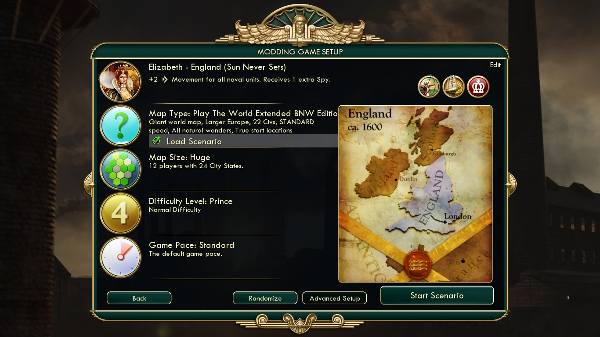
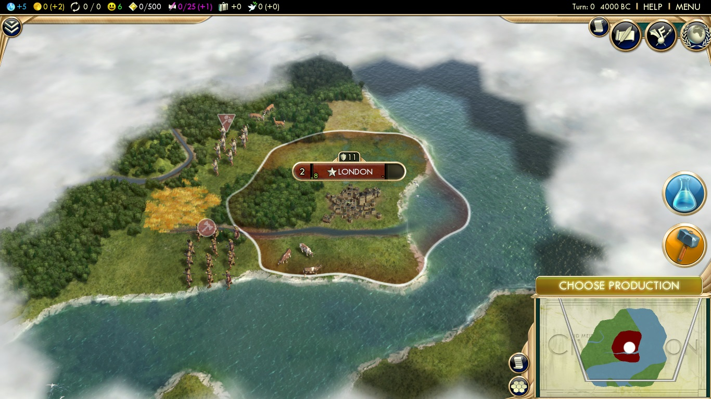
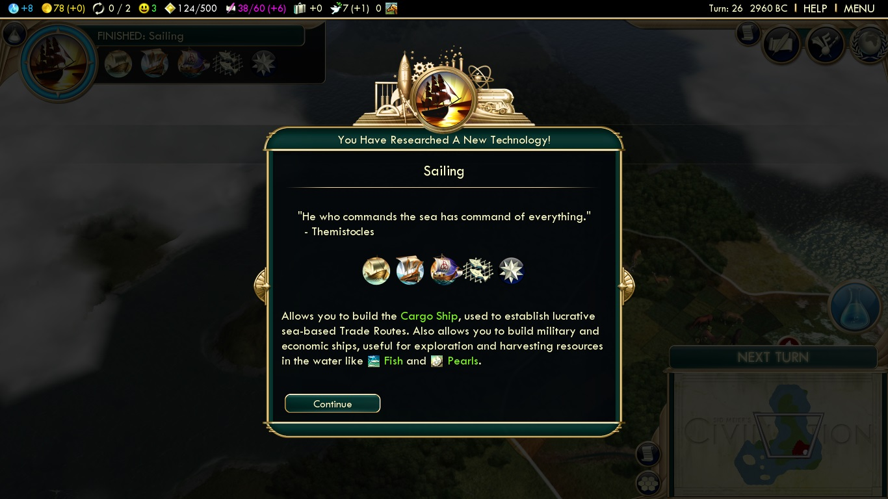
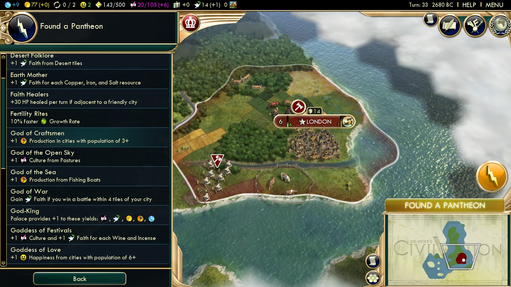
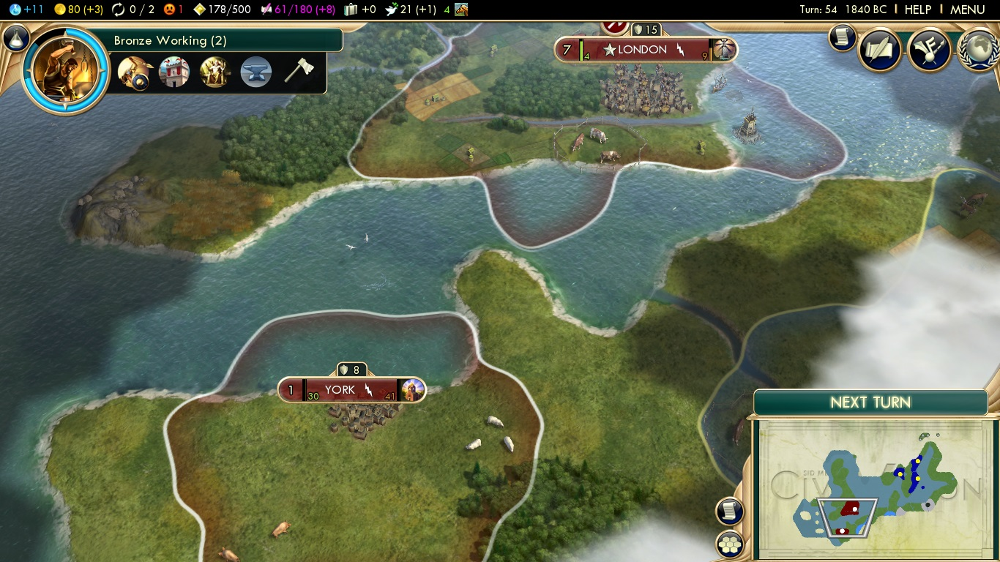
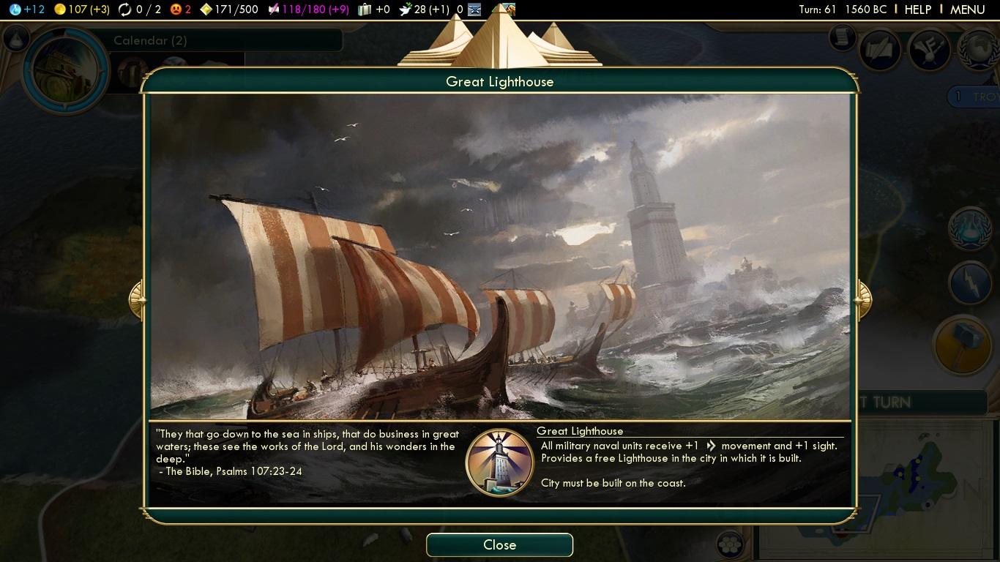
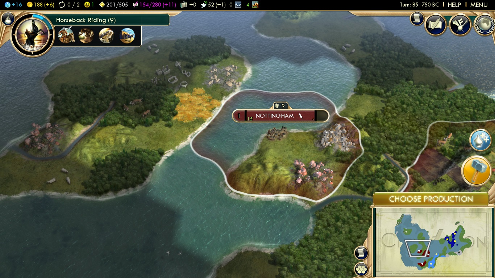
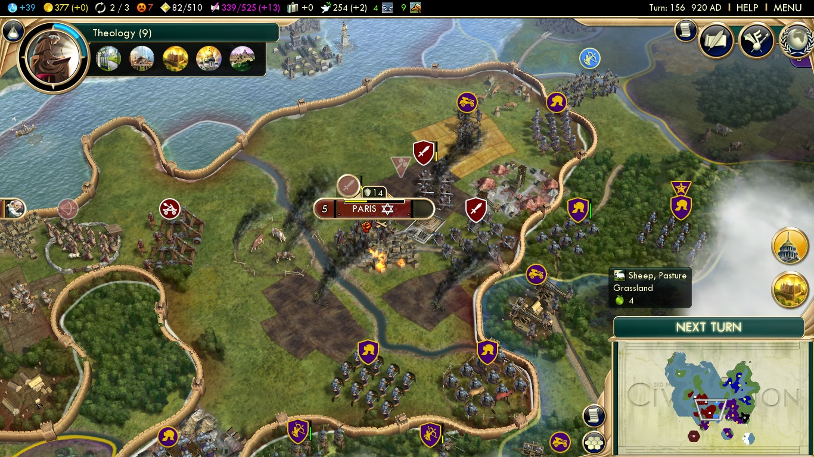

Before you lies a step-by-step process on how I captured Paris. All screenshots are my own, taken on the fantastic game, "Sid Meier`s Civilization 5."
For those of you unfamiliar with Civilization 5, I have included an introductory video created by the wonderful people at IGN.
The Perfect OpponentOne of the most important parts of any civilization game is deciding who you will play as. I chose the English. Aside from being one of the closest civilizations geographically to the French, they also have a host of useful bonuses. An extra spy and an extra two movement for naval units will ensure that I rule the seas. |
 |
Humble BeginningAnd so my journey of conquest begins. London is founded, but my mortal enemy is not far. |
 |
They Call It "The English Channel" for a Reason.An essential part of my plan is discoving sailing. Not only does it allow me to build powerful war ships, but it also lets me move my armies across the English Channel. |
 |
The Backing of the GodsI found my first pantheon, "God of the Sea." This gives me extra production to build units from all my fishing boats. |
 |
Storm the BeachesI settle my second city on France`s doorstep. This will be an excellent staging area to launch an invasion. |
 |
A Beacon For All (Except the French)The industrious English have completed the Great Lighthouse. This makes my strong naval units even stronger. |
 |
An Iron FistMy third city, Nottingham, is founded in central England. This city is important because it links iron to my empire, which will soon be crafted into dozens of vicious swordsmen. |
 |
Oui Oui, Victory For MeThe combined force of my swordsmen and my catapults prove too much for the French to handle, and they wave the white flag. Paris is mine! |
 |